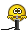

It's over...?
14.10.2026 среда 22:37
Что бы это ни значило...
За 2 дня 14 коммитов на сайт для меня это как-то перебор
Достаточно много, вообще, фичей появилось на сайте, как по мне. Бурмалда прям. Что могу сказать, пользуйтесь. Идеи того, как расширить функционал текущего раздела сайта, пока закончились. Разумеется, будут выходить какие-то полировочные обновления, но я пока не знаю, что еще добавлять, кроме новых постов. Если вдруг у кого есть идеи, что можно добавить сюда - отпишите в комментарии.
Ждем крупной обновы, получается, с новыми разделами. Постараюсь не затягивать с ней

, но пока обещать не буду. Спасибо всем за то, что комментируете под постами и до связи!